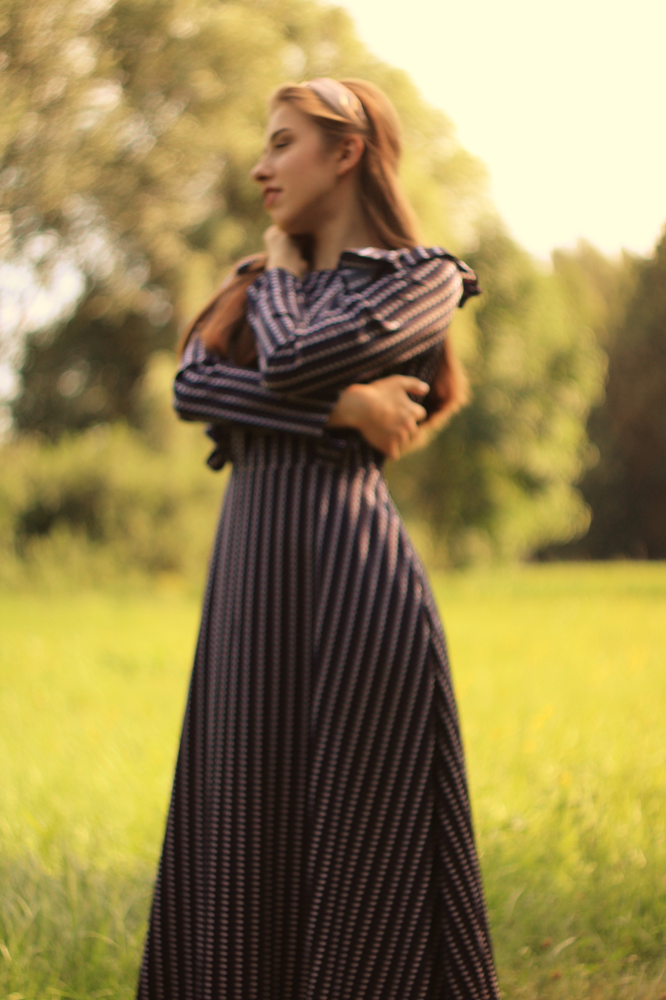
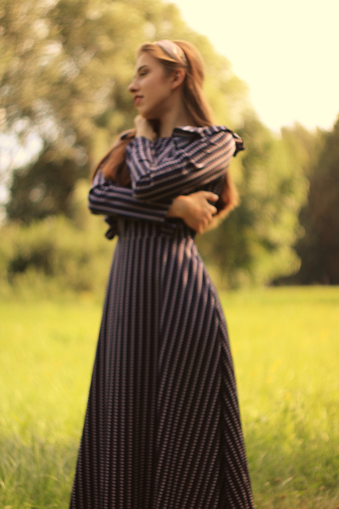

Вы только посмотрите какая она красивая!!!


А еще посмотрите какая она милашка была в детстве( ТАКОЙ И ОСТАЛАСЬ )! Катя один из самых отзывчивых людей, которых я встречала. Она всегда поможет, никогда не откажет. ОБЪЯСНЯЕТ ВЫШКУ В 10209293923003 РАЗ ЛУЧШЕ ПЛЮЩА.
Катя очень красивая и ей очень идут распущенные волосы( я была в шоке, когда ее один раз увидела такой за 1,5 года)!
Катенька, ты просто буська , такой и оставайся, и пускай никакая гадость на твоем пути тебя не изменит, потому сейчас очень мало таких прекрасных людей.
 


Здесь хочется процитировать прекрасные слова Кати: "Академия дает мне бесценный опыт во всех сферах жизни разом. Вместе учимся, преодолеваем трудности, развиваемся, расширяем кругозор, практикуем навыки и становимся лучше. Так как смысл есть в самосовершенствовании (и в соблюдении моральных норм). В любых ситуациях человек должен оставаться человеком. Без морали в голове человек – не человек."